Cog Paths
Cog Paths provide the best way to get a reference to any Cog within your game. It allows you to point directly to the object as you’ve identified in the editor (or through a written file path) instead of wasting valuable computation time searching for it in code. In this lesson we will make an extremely small and simple project in order to cover creating Cog Paths, linking them to objects within the editor, and looking at the properties of Cog Paths that are available to you.
Create a New Project
Level Setup
We’ll make the Player first.
- Command:
CreateSpriteor - In the Properties Window
- Set Name to:
Player - Under Transform
- Set Translation to
[-4.0, 0.0, 0.0]
- Set Translation to
- Under Sprite
- Set Color to:
[R: 0, G: 0, B: 255, A: 1.00],#0000FF - Set SpriteSource to:
Circle
- Set Color to:
- Set Name to:
- Add Component Area
- Under Area
- Set Size to:
[1.5, 1.5]
- Set Size to:
- Add Component RigidBody
- Under RigidBody
- Set DynamicState to:
Kinematic
- Set DynamicState to:
- Add Component SphereCollider
- Under SphereCollider
- Set Radius to:
0.5
- Set Radius to:
The Property window for the Player object should now look like this:
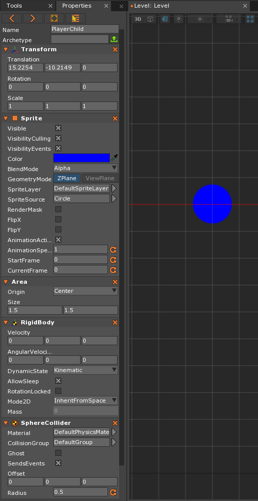
Now let’s make the Enemy
- Command:
CreateSpriteor - In the Properties Window
- Set Name to:
Enemy - Under Transform
- Set Translation to
[4.0, 0.0, 0.0]
- Set Translation to
- Under Sprite
- Set Color to:
[R: 255, G: 0, B: 0, A: 1.00],#FF0000
- Set Color to:
- Set Name to:
- Add Component Area
- Add Component RigidBody
- Under RigidBody
- Set DynamicState to:
Kinematic
- Set DynamicState to:
- Add Component BoxCollider
The Property window for the Enemy object should look like this:
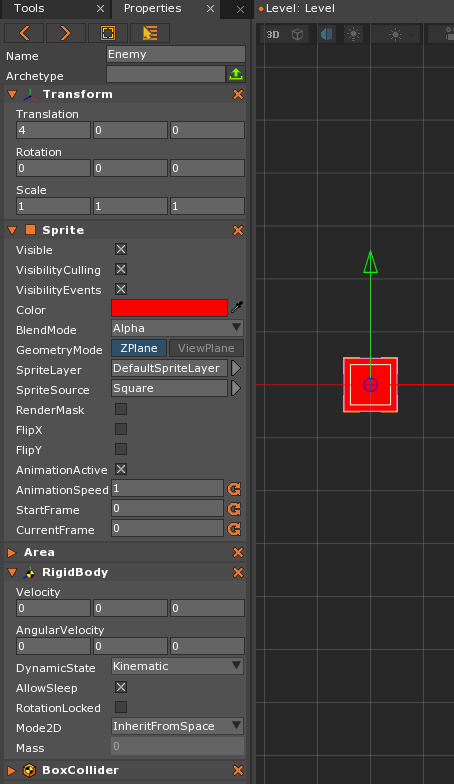
Finally, let’s duplicate the Enemy object twice for a total of three enemies.
- In the Level window
- Select the
Enemyobject Ctrl+Dto Duplicate the object
- Select the
- In the Objects window
- Select the new copy of the object
- In the Properties window
- Under Transform
- Set Translation to:
[4.0, 3.0, 0.0]
- Set Translation to:
- Under Transform
Repeat the previous steps to make the third enemy, but this time set Translation to: [4.0, -3.0, 0.0]
Your Level editor screen should now look like the following picture:
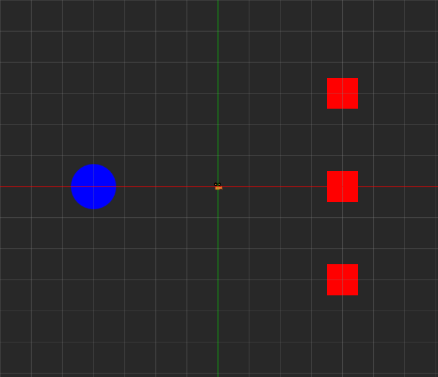
Now that we have our level setup complete, let’s make a simple player controller so we can move around the level.
Make a PlayerController ZilchScript
Our PlayerController script will allow the blue circle to move around the level so it can interact with the enemy objects.
- Add a new ZilchScript resource named:
PlayerController- Update the
PlayerControllerZilchScript as follows:
- Update the
class PlayerController : ZilchComponent
{
//Property to adjust the speed of the Player
[Property]
var Speed : Real = 0.0;
function Initialize(init : CogInitializer)
{
Zero.Connect(this.Space, Events.LogicUpdate, this.OnLogicUpdate);
}
function OnLogicUpdate(event : UpdateEvent)
{
var movement = Real3(0,0,0);
if(Zero.Keyboard.KeyIsDown(Keys.Down))
{
movement += Real3(0.0, -1.0, 0.0);
}
if(Zero.Keyboard.KeyIsDown(Keys.Up))
{
movement += Real3(0.0, 1.0, 0.0);
}
if(Zero.Keyboard.KeyIsDown(Keys.Right))
{
movement += Real3(1.0, 0.0, 0.0);
}
if(Zero.Keyboard.KeyIsDown(Keys.Left))
{
movement += Real3(-1.0, 0.0, 0.0);
}
//Moves the player according to input and the speed set in the property
this.Owner.Transform.Translation += movement * this.Speed * event.Dt;
}
}
Since we have a speed variable that is a Property, we need to attach the component and set the value in the Properties window.
- In the Objects window
- Select the
Playerobject
- Select the
- In the Properties window
- Under
PlayerController- Set Speed to:
5.0
- Set Speed to:
- Under
- Save the project and run the game
Now we have a player object that moves around the level.
Add Collision Logic to the Enemy Objects
To make this an actual game, we need to add some interaction beyond just moving a circle around a black screen. So, we’re going to create a new ZilchScript that will destroy the Enemy objects upon collision with the Player. We’ll also see our first example of using a Cog Path.
- Stop the Game
- Add a new ZilchScript resource named:
CollisionLogic - Save the Project
- Select the Enemy objects
- In the Properties window
- Add the CollisionLogic component we just created to the three Enemy objects
- Open the
CollisionLogicscript and update it as follows:
//Defines our new ZilchComponent
class CollisionLogic : ZilchComponent
{
//Instantiates a CogPath variable and makes it a Property
[Property]
var PlayerPath : CogPath = null;
//Instantiates a Cog variable that will hold the Cog taken from the CogPath
var Player : Cog = null;
function Initialize(init : CogInitializer)
{
//Assigns the Player Cog selected in the Cogpath Property to the Player Cog variable
this.Player = this.PlayerPath.Cog;
//Connects to the CollisionStarted event
Zero.Connect(this.Owner, Events.CollisionStarted, this.OnCollisionStarted);
}
//The function that will contain the behavior that will occur when a collision happens
function OnCollisionStarted(event : CollisionEvent)
{
//If the object collided with is the player, then...
if(event.OtherObject == this.Player)
{
//Destroy the object this component is attached to.
this.Owner.Destroy();
}
}
}
Let’s spend a minute looking at what we just added to the script. The first thing you’ll see under the initial class definition of the CollisionLogic component is a CogPath variable–PlayerPath–that will be used to get a reference to the Player. This will take place under the Properties of the component once it is attached to an object. We will look at this step in more detail below. The next variable–Player–is of the type Cog and will be used to hold the reference to the Player found through the CogPath. In order to reference the Player on our Cog variable, we will need to assign it to the Cog found through the CogPath variable under the Initialize function, so that it is ready to be used throughout the rest of the script.
Finding the Reference to the Player
In order to initially find the reference to the Player, we will use the CogPath Property as it appears in the Properties window. In order to do this, we’ll first need to attach our CollisionLogic component to the three enemies.
- In the Objects Window
- Select the first Enemy object
- In the Properties Window
- Repeat this same process for the other two Enemy objects in the Objects Window
Now, we will go back through all three Enemy objects, open the CollisionLogic component and use our CogPath property to find a reference to the Player.
- In the Objects Window
- Select the first Enemy object
- In the Properties Window
- Under CollisionLogic
Left Click,HoldandDragthe Orange Reticle to the right ofPlayerPathto the “Player” object (the blue circle). Once you click and hold, the mouse cursor should change to a white cross symbol. Hovering over the Player object correctly should look like this:
- Under CollisionLogic
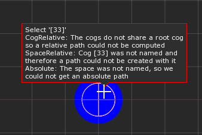
- Release the
Left Mouse Button
Once you’ve done this you should see :/Player appear in the box below PlayerPath. The end result should look like this:
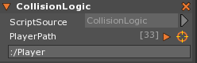
- Repeat this same process for each CollisionLogic component on the other two Enemy objects.
- Save the project and run the game
Now when you move the player to collide with an enemy, the enemy object should destroy itself.
The Syntax of CogPaths
When you grabbed the reference to the player with the CogPath property, the resulting string in the box below PlayerPath in the CollisionLogic component probably looked a bit strange. Why does it need the colon and forward slash? Wouldn’t “Player” be just as effective? Well, the reason we have this seemingly strange syntax is so you, the user, can see the object “path” as it relates both to the space as well as any parented or child objects. The :/ preceding Player means that the object referenced is within the same space as the object getting a reference to it (the enemies in this case). If this reminds you of standard file path syntax as you would see and use in a command line, then you would be correct. The syntax for CogPaths pretty much directly follows the same rules. To look at how this might work, let’s make a couple of changes to the level.
- In the Level Window
- Select the Player Objects
- “Ctrl+D” to duplicate the Player object
- In the Objects Window
- Select this duplicate Player object
- In the Properties Window
- Change the Name to:
PlayerChild - Under Transform
- Set Translation to:
-4.0, -4.0, 0.0
- Set Translation to:
- Change the Name to:
- Back in the Objects Window
Left Click,HoldandDragPlayerChildon top ofPlayer- Release
Left Mouse Button Left clickon the newly placed orange arrow to the left ofPlayer. You should now seePlayerChildslightly indented directly belowPlayer. Your Objects Window should now look like this:
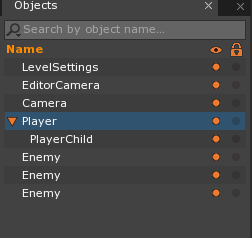
Now that we have an object parented to another, let’s see what the CogPath string looks like when it references the child object.
- In the Objects Window
- Select the first Enemy object
- In the Properties Window
- Under CollisionLogic
Left Click,HoldandDragthe Orange Reticle to the right ofPlayerPathto the “PlayerChild” object (the lower placed blue circle)
- Under CollisionLogic
Now, the CollisionLogic component should look like this, with a different string in the CogPath box:
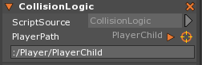
As you can see, the string has changed to: :/Player/PlayerChild. This would be the same syntax in a file system looking at a folder or file placed within another folder. Here, it designates that in the Object hierarchy, the PlayerChild object is a child of the Player object.
This syntax can be very helpful when, for whatever reason, you are not able to directly select an object, especially one that is three or four steps down one object’s hierarchy. One example could be a complex player model where a “finger” object is parented to a “hand” object that is parented to a “arm” object that is parented to a “torso” object. Trying to select that particular finger model with the mouse could be painstakingly difficult or even impossible depending on your model. Finding the finger object through the use of the CogPath syntax, however, makes finding the reference simple matter of typing in the object hierarchy down to its location (in our little example it would something like: :/PlayerModel/Torso/Arm/Hand/Finger).
Cog Path Properties
There are a number of in-editor properties that belong to CogPaths that are not immediately visible when you first look at the Property window. To reveal them, Left Click on the orange arrow directly to the left of the orange reticle in your CollisionLogic component (as it is attached to one of the enemies). You should immediately see a list of nine different properties drop down beneath the CogPath string box. These properties allow you to choose when to throw certain Errors and when to update the Cog and Path to the Cog. While this lesson will not go over each of the first six properties, you can easily see their functionality by hovering over each one’s name, like so:
- In the Objects Window
- Select one of the Enemy objects (the one still connected to the
PlayerChildwill do fine)
- Select one of the Enemy objects (the one still connected to the
- In the Properties Window
- Under the CollisionLogic component
Left clickthe orange arrow next to the orange reticle- In the list of properties that appear, hover your mouse over the second one down, named
ErrorOnPathCantCompute. You should see the following window pop-up, describing the function of the property:
- Under the CollisionLogic component
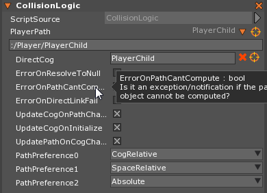
You can do the same thing with the rest of the first six properties available to you. They are also listed here, with their descriptions, in the table below:
| Editor Property | Description |
|---|---|
| DirectCog | If the current cog is null, and you try to access it through CogPath.Cog, it will try to resolve the path when you access it. DirectCog never tries to resolve the path. It’s a pointer to the object itself. |
| ErrorOnResolveToNull | Is an exception thrown if you try to access the Cog when it’s invalid or not found? |
| ErrorOnPathCantCompute | Throw an exception/notification if the path to an object cannot be computed? |
| ErrorOnDirectLinkFail | Throw an exception/notification if a direct link to the object cannot be resolved? |
| UpdateCogOnPathChange | When we set the cog path, should we try and resolve the object? (this also detects parse errors) |
| UpdateCogOnInitialize | Whether the cog path attempts to resolve an object when the object is fully initialized |
| UpdatePathOnCogChange | When we set the cog, should we try and recompute a path to the object? |
As for the last three, however (PathPreference0, PathPreference1, PathPreference2), no pop-up description is available and we will therefore give a short description of their functionality.
When automatically determining a string path to an object (such as when using the orange reticle target picker in editor when manually setting the Cog) the path preferences are used.
CogRelativemeans that we first try and look if there is a way to represent that path as a relative path. This is only valid if the objects are on the same hierarchy (such as ‘..’ for parent, ‘../OtherObject’ for a sibling, or ‘Child1/Child2’ for children).Space relativeassumes the objects are not on the same hierarchy, but exist within the same space. This means all paths begin with ‘:/’, which means look within the same space.Absolutemeans we always require a named space (such as Hud or Main) and then a full path to the object such as ‘Hud:/HealthText’. Note that Absolute can only be used in the editor with the orange reticle target picker if the space is given a name.
These three options can be changed so that you the first preference (PathPreference0) could be set to SpaceRelative instead of CogRelative, and so forth. This is completely up to the discretion of the user and the particular circumstances of his or her project.
Assigning a CogPath From a Different Space
Since we can create a CogPath by giving it the Name of a Space to look in, we’re able to create CogPaths from one Space to another. There are two limitations to keep in mind with this, however:
- A new Space can only be created using a ZilchScript
- The Path must be typed manually. The orange reticle target picker cannot be used to choose an object in a different Space.
The first step will be to make a new Level for the Space to load.
- Add a new Level resource named:
HUDLevel - Command :
CreateSpriteTextor - In the Properties Window
- Set Name to:
EnemyCounter - Under Transform
- Set Translation to
[13.0, 8.0, 0.0]
- Set Translation to
- Under SpriteText
- Set Text to:
Enemies left: 0
- Set Text to:
- Set Name to:
The new Level should now look like this:
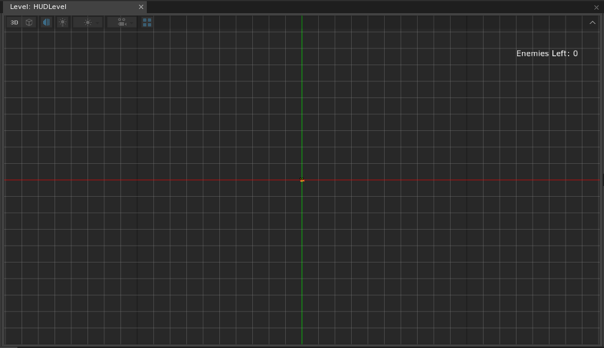
Next, a new ZilchScript will need to be added for the EnemyCounter SpriteText.
- Add a new ZilchScript resource named:
EnemyCount - Update the EnemyCount script with the following:
class EnemyCount : ZilchComponent
{
// A variable used to count how many enemies are left
var EnemiesLeft : Real = 0;
function Initialize(init : CogInitializer)
{
Zero.Connect(this.Space, Events.LogicUpdate, this.OnLogicUpdate);
}
function OnLogicUpdate(event : UpdateEvent)
{
// Set up the Text to always show what EnemiesLeft currently is
this.Owner.SpriteText.Text = "Enemies Left: `this.EnemiesLeft`";
}
}
- Select the EnemyCounter Object
- In the Properties window
There’s only one more thing that we need to do to the HUDLevel now, and that’s make sure that it won’t cover the main Level window when it gets loaded.
- In the Objects window
- In the Properties window
- Under the CameraViewport
- Set Background to:
False
- Set Background to:
- Under the CameraViewport
- Save the project
Now that we’re done, we can go back to the main Level.
- In the Library window
- Under Level
- Select and open
Level
- Select and open
- Under Level
We need a script to create the new Space and load the HUDLevel now.
- Add a new ZilchScript resource named:
HUDLoader - Update the HUDLoader script:
class HUDLoader : ZilchComponent
{
// Assign the HUDLevel to make sure we load the correct Level
[Property]
var LevelToLoad : Level = Level.HUDLevel;
// This will become the new Space
var HUDSpace : Space = null;
function Initialize(init : CogInitializer)
{
// Create a new named Space named HUDSpace
this.HUDSpace = this.GameSession.CreateNamedSpace("HUDSpace", Archetype.Space);
// Load the new Level in the new Space
this.HUDSpace.LoadLevel(this.LevelToLoad);
}
}
- In the Objects window
- In the Properties window
- Add the HUDLoader component
- In the HUGLoader window
- Assign the HUDLevel resource to the LevelToLoad property
- Save the project and run the game
It should look like this:
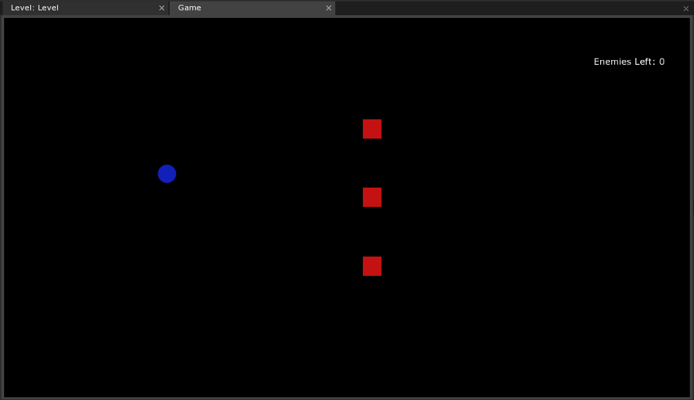
LevelSettings is good object to attach the new script to as it ensures that the new Space will only be created once. We know it’s being properly created because the “Enemies Left” text is showing up in the corner; now we just have to give the enemies a CogPath to the object.
- Open the
CollisionLogicscript and update it with the following:
//Defines our new ZilchComponent
class CollisionLogic : ZilchComponent
{
//Instantiates a CogPath variable and makes it a Property
[Property]
var PlayerPath : CogPath = null;
//This will be the CogPath to the EnemyCounter object
[Property]
var CounterPath : CogPath;
//Instantiates a Cog variable that will hold the Cog taken from the CogPath
var Player : Cog = null;
//This will be a reference to the EnemyCount script on the EnemyCounter object
var Counter : EnemyCount = null;
function Initialize(init : CogInitializer)
{
//Assigns the Player Cog selected in the Cogpath Property to the Player Cog variable
this.Player = this.PlayerPath.Cog;
//Assigns a reference to the EnemyCount script on the given object
this.Counter = this.CounterPath.Cog.EnemyCount;
//Whenever a new enemy is created, increment the EnemiesLeft variable by 1
this.Counter.EnemiesLeft += 1;
//Connects to the CollisionStarted event
Zero.Connect(this.Owner, Events.CollisionStarted, this.OnCollisionStarted);
}
//The function that will contain the behavior that will occur when a collision happens
function OnCollisionStarted(event : CollisionEvent)
{
//If the object collided with is the player, then...
if(event.OtherObject == this.Player)
{
//Lower the amount of enemies by one and...
this.Counter.EnemiesLeft -= 1;
//Destroy the object this component is attached to.
this.Owner.Destroy();
}
}
}
Since the object we want the enemies to have a path to are is in a different Space, we need to manually enter the path in the Properties window.
- In the Properties window
- Under CollisionLogic
- Enter the path to the EnemyCounter object, starting with the name of the Space:
HUDSpace:/EnemyCounter
- Enter the path to the EnemyCounter object, starting with the name of the Space:
- Under CollisionLogic
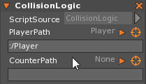
- Do the same for the remaining Enemy objects
- Save the project and run the game
Now when the level is loaded our EnemyCounter will show the amount of enemies in the level and go down by one each time an enemy is destroyed.
Properties and Functions of CogPath
The following tables will cover all of the member properties and functions of CogPath that are available in Zilch.
The Properties of CogPath in Zilch
The following table enumerates the properties of CogPath available to the user in Zilch:
| Property | Description |
|---|---|
RelativeTo : Cog |
The cogs that we compute paths relative to (i.e. parent or child objects) |
| Required | Deprecated Name changed to ErrorOnResolveToNull |
The Functions of CogPath in Zilch
The following table enumerates the functions of CogPath available to the user in Zilch:
| Function | Return | Description |
|---|---|---|
| Clone() | CogPath |
Creates a new copy of a cog path (since cog paths are reference counted and shared) |
| Refresh() | Boolean |
This will attempt to refresh an object using the DirectCog reference. If it finds it, it returns true; otherwise, it returns false. |
| RefreshIfNull() | This method will only attempt to refresh is the object is null. |
In this Lesson, we have covered creating CogPath properties, finding references to Cogs using both the orange reticle target picker as well as using a particular syntax to look in object hierarchies, assigning a Cog variable to the reference received from the CogPath, and went over the properties available to you when using CogPaths.